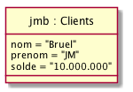
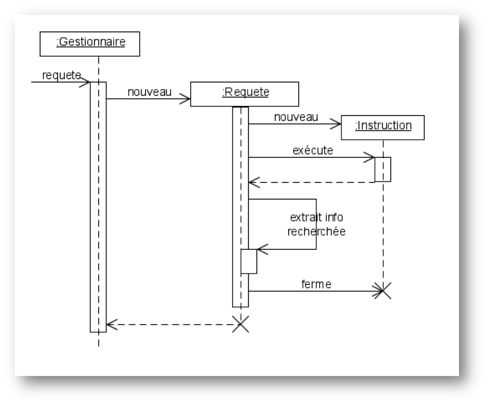
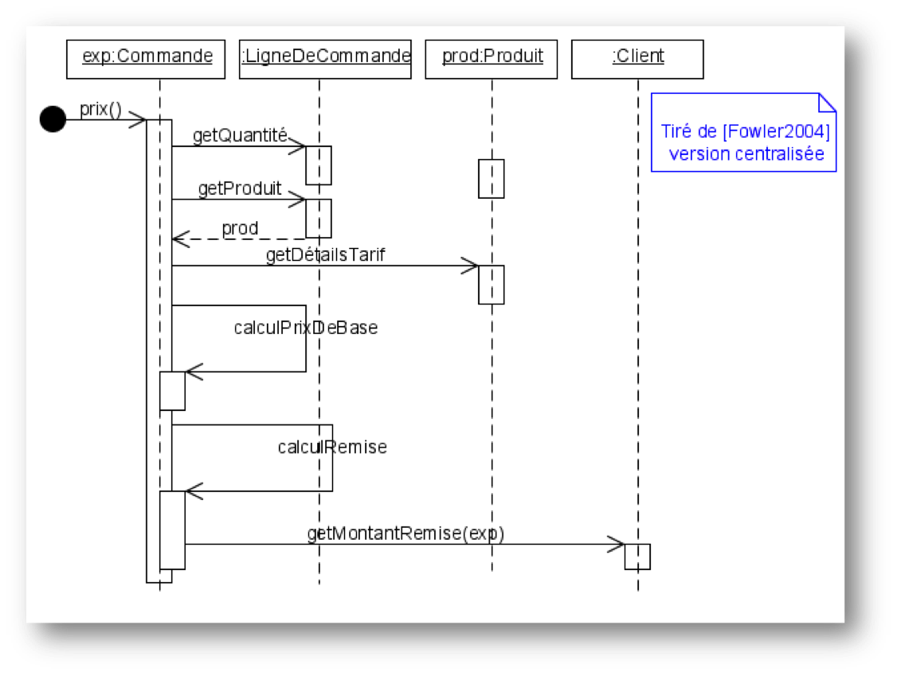

1. Plan
2. Avant-propos

Nous allons vous apprendre dans ce cours des techniques pour maîtriser la Conception Orientée Objet.
|
Nous suivons (comme tous les DUT informatique) le programme pédagogique national (PPN - disponible ici). |
2.1. À qui est destiné ce document?
Les étudiants du DUT informatique, mes collègues enseignants qui cherchent un document de référence accessible, et … moi-même (pour organiser mes notes diverses)!
2.2. À qui il n’est pas destiné?
Si vous appartenez à une de ces catégories, ce document n’est pas pour vous :
-
vous cherchez un document de référence
-
vous voulez vous perfectionner
-
vous souhaitez préparer une certification Java.
2.3. Historique
Ce document est la compilation de plusieurs années d’enseignement …
Vous trouverez en référence (cf. Bibiliographie) les ouvrages et autres documents utilisés.
Je tiens à remercier mes collègues qui m’ont aidé dans mon entreprise :
-
Nicolas Belloir de l’Université de Pau et des Pays de l’Adour, Laurent Nonne et André Peninou de l’IUT de Blagnac;
-
le maître d’AsciiDoc : Jean-Michel Inglebert.
2.4. Sur l’auteur
-
Professeur à l’Univesité de Toulouse, en poste à l’IUT de Blagnac
-
Co-fondateur de l’association SysML-France
-
Membre du comité éditorial de la revue SoSyM
-
Membre du Steering Committee de la conférence ACM/IEEE MODELS
-
Chef du département informatique de l’IUT de Blagnac 2009 à 2012
-
Responsable de l’ancien module ACSI (Analyse et Conception des Systèmes d’Information)
-
Marié à une merveilleuse femme, papa d’une merveilleuse fille
2.5. Comment lire ce document?
Ce document a été réalisé de manière à être lu de préférence dans sa version électronique (au format HTML ou PDF), ce qui permet de naviguer entre les références et les renvois interactivement, de consulter directement les documents référencés par une URL, etc.
| Si vous lisez la version papier de ce document, ces liens clickables ne vous servent à rien, et c’est votre punition pour avoir utilisé du papier au lieu du support électronique! |
2.5.1. Conventions typographiques
J’ai utilisé un certain nombre de conventions personnelles pour rendre ce document le plus agréable à lire et le plus utile possible, grâce notamment à la puissance d’AsciiDoc :
-
Des mises en formes particulières concernent les noms de personnalités (e.g., Jean-Michel Inglebert), etc.
-
Les références bibliographiques présentées en fin de document (cf. Bibliographie).
-
Tous les flottants (figures, tableaux, définitions, etc.) sont listés à la suite de la table des matière.
-
Les termes anglais (souvent incontournables) sont repérés en italique, non pas pour indiquer qu’il s’agit d’un mot anglais, mais pour indiquer au lecteur que nous employons volontairement ces termes (e.g., Package).
Le titre des figures indique (entre parenthèses) un M pour les figures issues de Modelio, un MD pour les figures issues de MagicDraw, un P pour les figures issues de plantUML, un Py pour les figures issues de Papyrus, un R pour les figures issues de Rhapsody, un T pour les figures issues de TOPCASED, un Y pour les figures issues de yuml, et un UK pour les figures en anglais.
Pour les notes, conseils, avertissements, etc. voici la liste des pictogrammes utilisés :
|
Les notes comme celles-ci sont utilisées pour indiquer des éléments intéressant pour la majorité des lecteurs. |
|
Ces notes indiquent des points importants qui réclament votre attention. |
|
Celles-ci concernent en général des points de détail et permettent "d’aller plus loin". |
|
Définition : Exemple (OMG UML v2.4.1, p. 152)
Ces notes concernent des définitions tirées de la spécification UML™ et sont donc précisément référencées. |
|
Modélisation UML incorrecte. |
|
Modélisation UML partiellement correcte ou pouvant prêter à confusion. |
|
Modélisation UML correcte. |
2.6. Pourquoi parler de "document"?
Parce que j’ignore la version que vous êtes en train de lire. À partir de l’original, plusieurs versions ont été générées grâce à AsciiDoc :
-
Une version pour le web (Moodle) au format html
-
Une version pour présentation en amphi au format présentation
-
Une version pour impression au format pdf
2.7. Utilisation et autres mentions légales
Les images qui ne sont pas libres de droit contiennent un lien vers les sites où je les ai "empruntées".
N’hésitez pas à m’envoyer vos remarques en tout genre en m’écrivant ici.
3. Organisation et généralités
Ce support de cours sert deux publiques :
-
les étudiants de l’IUT de Blagnac à qui il est destiné en priorité
-
les étudiants de l’IUT de Calais qui suivent à distance ce module!
Comme déjà indiqué, ce module est fortement corrélé aux modules de programmation (M2103) et d’IHM (M2105).
Il est prévu pour 10h de cours, complété par 15h de TD et 20h de TP. Il va porter principalement sur UML™, un langage universel de modélisation très utilisé en entreprise.
4. La notation UML
4.1. Méthodologie de développement
Nous allons aborder les points suivants :
-
Pourquoi l’orienté objet ?
-
Pourquoi UML?
-
Processus de développement
-
Conception logicielle
4.1.1. Pourquoi l’orienté objet ?
-
Prendre en compte tout le système
-
Ce que fait le système + comment il est organisé pour le faire
-
Quelques concepts fondamentaux :
-
les objets
-
les messages
-
les classes
-
l’héritage et le polymorphisme
-
4.1.2. Pourquoi UML?
-
tout le cycle de vie :
-
visualisation
-
spécification
-
construction du système
-
documentation
-
-
synthèse des meilleurs aspects des méthodes courantes
-
standard mondial
4.1.3. Processus de développement
Activités de bases :
-
Expression des besoins
-
Identification de l’environnement et du contexte
-
Planification
-
Analyse
-
Conception
-
Implémentation
-
Test
-
Révision
Plusieurs approches :
-
Cycle en cascade ("waterfall")
-
En spiral (Boehm)
-
Itératif (RUP, openUP)
-
Inception : évaluation initiale (risques, etc.)
-
Elaboration : architecture, principaux éléments
-
Construction : développement incrémentale
-
Transition : déploiement, formation
-
-
eXtreme Programming
-
ensembles de "principes"
-
4.1.4. Conception logicielle
Qu’est-ce qu’une bonne conception?
-
elle est conforme aux besoins fonctionnels / non-fonctionnels
-
elle est modulable et extensible
-
elle est compréhensible et vérifiable
-
elle est aussi simple que possible
Quelques éléments dans ce sens :
-
séparations des responsabilités (e.g., 3-tiers)
-
modularité
-
faible dépendance et forte cohésion
-
utilisation de standards (outils, langages et notations)
Notation pour la conception
-
Cas d’utilisation
-
Diagrammes de classe
-
Diagrammes d’état (statechart)
-
Diagrammes d’interaction (scénarios)
-
Diagrammes de séquence
-
Diagrammes de communication (collaboration)
-
Spécification des opérations et méthodes
-
Diagrammes de flux d’écran
-
Tables de décision
-
CRC
-
…
4.2. UML en résumé
-
Diagrammes
-
13 dans la version 2.0
-
-
Principes généraux
-
Mécanismes
-
paquetages
-
stéréotypes
-
étiquettes
-
notes
-
contraintes
-
4.2.1. Diagrammes
Plus tard
4.2.2. Principes généraux
Plus tard
4.2.3. Mécanismes
Plus tard
5. Modèles, Diagrammes et outils
5.1. Différence entre modèle et dessins
UML™ n’est pas une palette de dessins et d’éléments de base servant à faire des diagrammes. Il existe une représentation graphique des éléments modélisés en UML™. Cette représentation graphique est celle à laquelle la plupart des étudiants s’attachent et sur laquelle ils se concentrent : ils apprennent à "dessiner"! Elle est importante car elle permet de communiquer visuellement sur le système en développement, mais du point de vue du concepteur, c’est le modèle qui importe le plus.
C’est pourquoi nous vous recommandons de ne jamais "dessiner" des diagrammes UML™ [1], mais d’utiliser des outils dédiés (cf. Outils UML). Ils respectent en général la norme OMG UML v2.4.1 (bien qu’il faille se méfier).
Un des intérêts de la modélisation est de faciliter la communication, notamment au travers des diagrammes et leur aspect graphique et synthétique. Un dessin est donc un plus par rapport à du texte.
Néanmoins, il ne faut pas se contenter d’un simple dessin pour au moins deux raisons importantes :
-
un dessin n’est pas assez formel (comment être sûr d’avoir correctement utilisé tel ou tel symbole, cf. les exemples dans la suite) ;
-
il est impossible d’assurer la cohérence globale des modèles dans le cas d’un dessin.
Un modèle est une sorte de base de donnée qui regroupe des éléments issues de différents points de vue (saisis le plus souvent au travers de diagrammes). Un diagramme est une vue partielle du modèle (donc incomplète). Le modèle est la vraie plus value car il va permettre de détecter les incohérences sur les exigences, les problèmes de complétude, lancer des analyses, faire des transformations vers d’autres langages ou formats, etc. Par exemple dans un outil de modélisation il y a une grande différence entre supprimer un élément d’un diagramme (on parlera alors de "masquer" un élément d’un diagramme) et supprimer un élément de modèle (ce qui aura pour effet de supprimer cet élément de tous les diagrammes où il était présent).
|
La seule "entorse" à cette règle de l’utilisation d’outils de modélisation plutôt que d’outils de dessin que je m’autoriserai dans la suite concerne les diagrammes UML™ que je génère dans ce document à l’aide de plantUML ou parfois de yuml. Les diagrammes étant générés, ils respectent la notation de manière automatique. |
Voici deux exemples de non respect de la notation qui illustre le type d’erreur que l’on trouve souvent dans les modèles qui circulent sur Internet ou même parfois dans certains livres.
5.1.1. Diagramme des cas d’utilisation
Par exemple ce diagramme des cas d’utilisation (cf. Diagramme des Cas d’Utilisation) ne respecte pas la syntaxe graphique d’UML™ :
|
Erreur : relations entre UC incorrecte (P)
|
|
Solution : utiliser un outil UML (Py)

|
5.1.2. Diagramme de séquence
Par exemple ce diagramme de séquence système (cf. [DSS]) ne respecte pas la syntaxe graphique d’UML™ :
|
Erreur : classes au lieu d’objets

|
|
Solution : utiliser un outil UML (P)

|
5.1.3. Conclusion
Soyez donc d’autant plus prudent que vous n’utilisez pas d’outils dédiés.
| Pour une discussion intéressante sur les différences entre modéliser et dessiner, cf. http://modeling-languages.com/drawing-tools-vs-modeling-tools/. |
5.2. Outils UML
Il existe un certain nombre d’outils permettant de réaliser des modèles UML™. Voici une liste non exhaustive :
Vous trouverez sur Internet des comparatifs et des avis à jour sur les outils.
Ce que je voudrai souligner ici c’est l’importance du modèle comme "dépôt" (je préfère le terme anglais de repository) d’éléments de base en relation les uns avec les autres. C’est toute la différence entre le dessin et le modèle.
|
Attention toutefois à ne pas confondre ce que vous permet (ou pas) de faire l’outil et la notation elle-même. Les fabricants ont parfois pris des libertés ou bien n’ont pas complètement implémenté toutes les subtilités de la notation. |
6. Modéliser les données
Le diagramme de classe UML™ permet principalement de modéliser les données qui seront manipulées par le système en développement, que ce soit les données de la future base de donnée (par exemple si l’on s’oriente vers une solution du type PHP/MySQL) ou bien des objets manipulés dans le futur programme Java (par exemple).
6.1. Données et variables
Commençons par un parallèle avec les données manipulées en programmation :
Une donnée (e.g., 37.2) est brute, elle n'a de signification que lorsqu'elle devient une information (e.g., "température en degré Celcius").
Nous souhaitons donc dépasser la notion de variable vu en programmation au premier semestre pour passer à la notion de donnée (qui sera utilisée pour véhiculer une information).
6.2. En Merise
Pour ceux qui ont étudié la méthode Merise, elle permet de modéliser, en plus des Flux et des Traitements, les Données. Mais les modèles de données de Merise ont été remplacés dans la pratique par ceux proposés par UML™.
| Flux | Traitements | Données | |
|---|---|---|---|
Conceptuel |
MCD |
||
Organisationel |
|||
Logique |
MLD |
||
Technique |
MTD |
6.3. Diagramme de classe
Nous souhaitons représenter les données manipulées par le système, ainsi que les relations entre ces données.
|
Nous parlons pour l’instant de classe, si vous êtes familié avec le langage C vous pouvez parler de structure. Pour l’instant considérons que les 2 sont équivalents. |
6.3.1. Concept de Classe
Une classe est une représentation unique servant à caractériser un ensemble d’objets jouant un rôle identique et décrits par les mêmes attributs.

|
Une classe n’est pas un ensemble d’objets! |
Afin de faciliter la lisibilité des diagrammes, il est d’usage d’adopter une certaine façon de nommer les différents éléments. Ceci permet d’avoir une homogénéité dans les différents diagrammes.
|
Exemple de convention d’écriture suivante :
|

6.3.2. Classes et objets
En programmation on parle de type et de variable. Même si c’est un raccourci très rapide nous pouvons pour l’instant faire le parallèle entre les notions de classe et d'objet.
On parlera toutefois d'instance pour désigner un objet issu d’une classe.

6.3.3. Attributs
Un attribut est une propriété représentative d’un objet (nom d’une personne, couleur d’une voiture, moyenne d’un étudiant…).
Pour chaque objet d’une classe, un attribut possède une valeur particulière.
Exemples :

|
Nous utiliserons la convention d’écriture suivante pour les attributs :
|
|
Les noms des attributs de type booléen seront précédés du préfixe est (is en anglais). Exemples :
L’intérêt de cette convention permet d’écrire directement des instructions facilement interprétables, comme : |
6.3.4. Identifiant
Un identifiant est un attribut particulier d’une classe dont les valeurs représentent sans ambiguïté chaque objet de la classe.
|
Choix d’un identifiant
Il faut prendre un attribut non ambigu (le nom d’une personne ne convient pas) et court (le numéro de sécu est trop long). |

|
Convention : Les noms des identifiants commenceront par le préfixe id |
Vous approfondirez (ou avez déjà abordé) cette notion en Base de donnée.
6.3.5. Association
Une association est un ensemble de liens permanents existant entre les objets de deux ou plusieurs classes. On dira qu’une association lie plusieurs classes ou que les classes participent à l’association.
|
Exemple
Dans l’exercice sur l’Agence de Voyage, une fiche client est liée à une ou plusieurs commandes en cours. |
Dimension d’une association :
Nombre de classes mises en jeu par l’association
(binaire : 2, ternaire : 3, n-aire : n)
Exemple d’association binaire
Soient les classes Fournisseurs et Produits. On veut indiquer quels sont les produits susceptibles d’être fournis par chaque fournisseur et quels sont les fournisseurs susceptibles de fournir chaque produit.

Nom d’une association :
Afin de clarifier les informations, il est important de nommer les associations.
Il existe trois façons de nommer une association :
-
un verbe à l’infinitif (e.g., Fournir)
-
un verbe conjugué avec un sens de lecture : Fournit > ou < Est fourni par
-
un rôle (placé à une extrémité de l’association)
|
Un nom d’association commencera par une majuscule comme les noms de classes. |
Cardinalité :
Indique à combien d’objets minimum et maximum de la classe d’en face est lié tout objet de la classe de départ. Elle est représentée par un couple (M..N). Elle représente le nombre minimum et maximum d’objets (de la classe de ce côté-ci de l’association) qui peuvent être en association avec un objet donné (de l’autre côté de l’association).
|
Attention, dans une cardinalité M..N, M doit toujours être inférieur ou égal à N. Exemple : 3..10. |
Cardinalités classiques :
-
* : signifie [0..N] avec N indéterminé. Très utilisé pour les associations multiples optionnelles.
-
1..* : signifie [1..N] avec N indéterminé. Très utilisé pour les associations multiples obligatoires.
-
1 : signifie [1..1]
6.3.6. Représentation
Représentation des classes
Une classe est représentée par un rectangle divisé en plusieurs compartiments. Le compartiment supérieur contient le nom de la classe et le compartiment inférieur la liste des attributs (l’identifiant est placé en tête de liste).

Représentation des associations
Une association binaire est représentée par un trait reliant deux classes. Le nom de l’association est placé à proximité du trait et les cardinalités sont placées de part et d’autre.

6.3.7. Classe association
Certains attributs ne dépendent pas d’une seule classe, mais de plusieurs. Exemple : le prix d’un produit selon le fournisseur qui le propose.

Pour les représenter, ils seront placés dans une classe-association reliée au trait de liaison par un trait en pointillés. Le nom de l’association sera alors placé dans la classe-association.
6.4. Pour dessiner rapidement de l’UML
Les schémas de cette section sont écrits en utilisant le langage PlantUML.
Par exemple le schéma précédent a été réalisé à partir du code suivant :
@startuml
class Produits {
idPro
designation
poids
}
class Fournisseurs {
idFour
raisonSociale
adresse
}
Produits "0..*" -- "0..*" Fournisseurs : Fournir
@enduml
|
Vous pouvez tester en ligne : http://www.plantuml.com/plantuml/ ou encore télécharger le [plugin eclipse] (cf. illustration ci-dessous) |

6.5. Exercices de révision
-
Réalisez le diagramme de classes suivant :
-
Les étudiants possèdent un numéro d’étudiant (identifiant), un nom, un prénom, une date de naissance. Ils suivent des cours (titre, code du module).
-
Les examens concernent un cours donné. Chaque examen a lien à une certaine date et possède un coefficient.
-
Pour chaque examen un étudiant à une note.
-
Les cours sont enseignés par un enseignant (nom, prénom)
-
-
Réalisez le diagramme de classes suivant :
-
Un portable possède un clavier
-
Un clavier peut-être de type "azerty" ou "querty"
-
Un clavier possède des touches
-
Un portable a un 0 ou 1 propriétaire qui a lui même un nom et un prénom
-
Un portable a un prix d’achat et une valeur actuelle (souvent différente)
-
7. Diagramme des Cas d’Utilisation
Le Diagramme des Cas d’Utilisation est un modèle UML permettant de représenter :
-
les UC (Use Case ou Cas d’Utilisation)
-
les acteurs (principaux et secondaires)
-
les relations entre acteurs et UC
|
On notera simplement UC pour signifier "diagramme des UC" |
7.1. Définition et concepts
7.1.1. Cas d’Utilisation
Un cas d’utilisation (Use Case ou UC en abrégé) représente un ensemble de scénarios que le système doit exécuter pour produire un résultat observable par un acteur.
Exemple d’UC
Retrait par carte bancaire
- Scénario principal
-
L’UC démarre lorsque le Guichet Automatique Bancaire (GAB) demande au client son numéro confidentiel après l’introduction de sa CB. Le client entre son code et valide son entrée. Le GAB contrôle la validité du code. Si le code est valide, le GAB autorise le retrait et l’UC se termine.
- *Scénario alternatif n°1 *
-
Le client peut à tout instant annuler l’opération. La carte est éjectée et l’UC se termine.
- Exemple de codification de l’UC
-
UC01 ou RetraitCB (pour Retrait par carte bleue)
Précisions
Un cas d’utilisation peut être précisé par :
-
une description textuelle
-
un ou des diagrammes UML (séquence, activité)
|
Dans les outils, cette "précision" se manifeste par le fait que l’on "attache" généralement un diagramme de séquence à un cas d’utilisation (clic droit sur un UC → nouveau seq). |
7.1.2. Acteur
Un acteur peut être une personne, un ensemble de personnes, un logiciel, un processus qui interagit avec un ou plusieurs UC.
On peut trouver plusieurs types d’acteurs :
-
extérieurs au système (cf. actor Diagramme d’UC ci-après)
-
les acteurs principaux (= acteurs internes du MOT de Merise)
-
les acteurs secondaires (= acteurs externes du MOT de Merise)
-
les administrateurs (ils gèrent le système : données, sécurité, droits d’accès, utilisateurs…)
-
-
types d’acteurs prédéfinis dans UML :
-
\<<metaclass>>
-
\<<utility>>
-
\<<process>>
-
\<<thread>>
-
\<<powertype>>
-
7.1.3. Relations entre UC
- Extension (\<<extend>>)
-
Indique que l’UC source est éventuellement exécutée en complément de l’UC destination (cas particulier, erreur…)
- Inclusion (\<<include>>)
-
Indique qu’un UC est inclus obligatoirement dans un autre UC (notion de sous-programme par exemple)
- Généralisation
-
Relation entre un UC général et un autre plus spécialisé qui hérite de ses caractéristiques et en rajoute

|
On n’utilise généralement \<<include>> que dans le cas où le sous-cas d’utilisation est inclut dans plusieurs UC. Si ce n’est pas le cas, il est généralement englobé dans l’UC. |
7.2. Pour construire un UC (de manière générale)
-
identifier les acteurs
-
identifier les cas d’utilisation
-
structurer en packages
-
ajouter les relations
-
finaliser les diagrammes de cas d’utilisation
La suite logique est de décrire chaque UC par un diagramme de séquence système (cf. section suivante).
7.3. Exemples complets
7.3.1. Service comptable
7.3.2. Gestion des notes

7.3.3. Liens entre SNI et UC

8. Opérations, Paquetages et Java
8.1. Opérations
Un ensemble d’opérations définit le comportement de l’objet (ex : setVitesse(valeur)), c’est à dire son interface.


8.2. Opérations et Visibilité
- L'encapsulation
-
-
facilite l’évolution d’une application car elle stabilise l’utilisation des objets. On peut modifier l’implémentation des attributs d’un objet sans modifier son interface
-
garantit l’intégrité des données, car elle permet d’interdire l’accès direct aux attributs des objets (utilisation d’accesseurs). Un objet n’est manipulable qu’à travers son interface
-
|
Rappel : chaque opération a un argument implicite qui est l’objet sur lequel elle porte. Exemple : varKm = v2.getKilometrage( ); |
- Type d’opérations
-
Un accesseur getX() permet de consulter l’attribut X de l’objet, le modificateur setX(val) permet de modifier la valeur de l’attribut X avec le paramètre val. Par défaut, on doit avoir un accesseur par attribut privé.
- Visibilité
-
Il existe 4 niveaux de visibilité des attributs et des opérations :
-
- privé (l’élément n’est visible que par la classe)
-
+ public (l’élément est visible par toutes les autres classes)
-
# protégé (l’élément est visible par la classe et ses sous-classes)
-
~ package (l’élément est visible par la classe et les classes du même paquetage)
-
8.3. Paquetages
Les paquetages permettent de regrouper les éléments de modélisation. Ils peuvent contenir d’autres sous-paquetages sans limites de niveaux.
Le paquetage est un espace de nommage.
Un paquetage peut importer une classe issue d’un autre paquetage.
Exemple : Vehicules::Voitures signifie que la classe Voiture est importée du paquetage Vehicules.

|
On emploiera souvent dans ce cours le terme anglais de package pour désigner un paquetage. |
8.4. Génération de code
Voici quelques exemples de diagramme de classes et du code java associé.
8.4.1. Classe

package Catalogue;
import java.util.Date;
public class Catalogue {
private String nom;
private Date dateCreation;
public Catalogue() {
...
}
public Livre chercherLivre(String isbn) {
...
}
}8.4.2. Généralisation

public abstract class Personne {
private String nom;
private String prenom;
protected Date dateNaissance;
private static int ageMajorite = 18;
public abstract int calculerDureePret() {... }
public static void setAgeMajorite (int aMaj) {... }
}
public class Adherent extends Personne {
private int iD;
public Adherent() { ... }
public int getAge() { ... }
public int calculerDureePret() { ... }
}8.4.3. Associations
public class A1 {
private B1 leB1;
}
public class A2 {
private B2 lesB2[ ];
}
public class A3 {
private List lesB3 = new ArrayList();
}8.4.4. Dépendance

package Bibliotheque;
import Catalogue;
public class Bibliotheque {
private Catalogue leCatalogue;
...
}8.4.5. Equivalences entre diagramme de classes

8.4.6. Classe Association

public class Emploi {
private String titre
private Double salaire;
private Employe salarie;
private Societe employeur;
...
}9. Le Diagramme de Séquence
9.1. Généralités
-
Modélise les interactions entre objets
-
Séquencement dans le temps
-
Échange de messages
-
Spécifie les scénarios des cas d’études
-
Éléments :
-
participants
-
lignes de vie
-
barres d’activation
-
messages
-
blocs (loop,alt,opt,…)
-

|
Les lignes de vie représentent des objets et non des classes |
9.2. Exemple

9.3. Notions avancées
-
Instructions itératives et conditionnelles
-
Mieux vaut utiliser un diagramme d’activité
-
Cadres d’interaction
-
loop (boucle)
-
alt (alternative)
-
opt (optionel)
-
par (parallèle)
-
region (région critique - un seul thread à la fois)
-

9.4. Exemple de conceptions


9.5. Diagramme de séquence système
Bien que non présent dans UML, il est courant de trouver un diagramme de séquence particulier, le diagramme de séquence système ou DSS, où on ne représente qu’un seul objet : le système en cours de développement lui-même.

9.6. Lien entre UC, DSS et DS
La décomposition hiérarchique permet de réaliser une description "TOP-DOWN" du système à réaliser.
On fait un Diagramme de Séquence Système pour chaque UC (issu du Diagramme d’UC) pour déterminer les échanges d’informations entre l’acteur et le système.
Ensuite on fait un Diagramme de Séquence (DS) pour décrire comment les objets composants le système (issus du Diagramme de Classes) collaborent pour réaliser le traitement demandé.


10. Compléments Diag. Classe
Bientôt…
11. Schéma Navigationnel d’Interface
|
A été vu en M2105 (IHM) plutôt. |
12. Diagramme Séquence et Java
Bientôt…
13. Conception de tests
Cette partie vise à préparer les étudiants à écrire du JUnit pour le M2103.
14. MVC
Pour anticiper le Semestre prochain, où ce paradigme sera la règle…
Liens utiles
-
Le site officiel d’UML™: http://www.uml.org/
-
Un site très bien fait sur UML™ : http://www.uml-sysml.org/
A propos de ce document…
Document généré par Jean-Michel Bruel via AsciiDoc (version 8.6.8) de 'Stuart Rackham'.
Pour l’instant ce document est libre d’utilisation et géré par la 'Licence Creative Commons'.
 licence Creative Commons Paternité - Partage à l'Identique 3.0 non transposé.
licence Creative Commons Paternité - Partage à l'Identique 3.0 non transposé.